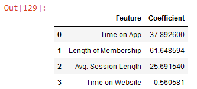
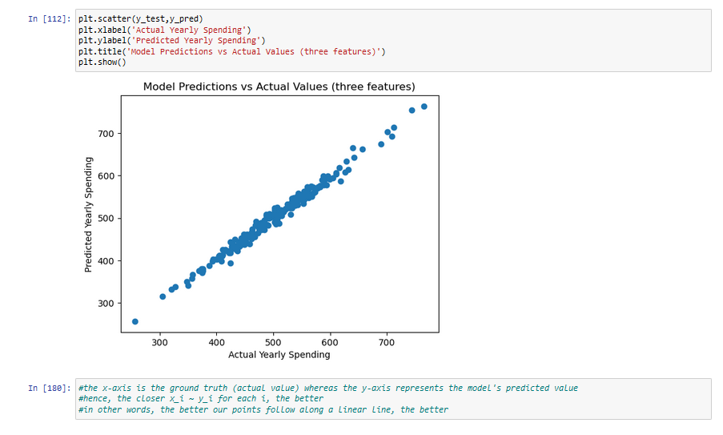

Resource Allocation
Should customer mobile app experience be prioritized over website experience?
Objective: Our company is looking to increase their customers yearly spending through resource investment and have to decide whether the app or the website should recieve additional funding.
Key Takeaways:
Length of Membership, Time on App, and Average Session Length
After conducting some exploratory data analysis on our initial features, we discovered that
Length of Membership, Time on App, and Average Session Length are
three features which appear to be linearly correlated with our target variable
yearly spending. Therefore, these three features should be considered canidate predictor variables
when building our linear regression model.
Avg. Session Length as an accounted feature makes a significant difference
Based on our EDA scatterplots, I would have guessed that Avg. Session Length was the least predictive feature
compared to our other two features of Length of Membership and Time on App. However, when you
actually build the model both with and without Avg. Session Length, you generate
significantly different results.
Accuracy plot, metrics scoring table, and residual plot with Avg. Session Length
With all three evaluation rubrics, we see that involving the Avg. Session length feature
improves our model significantly. Specfically, we have our accuracy plot resemble a simple
linear line more closely, we lower our root mean square error (RSME) score by approx 17.15, and our
residual plot has a much smaller range in residual values.
Coefficients Table : App vs Website
Based on the following coefficients table:

We have that if we were to keep all other variables constant...
One unit of increase in Time on App would yield $37.89 yearly spending.
One unit of increase in Length of Membership would yield $61.65 yearly spending.
One unit of increase in Average Session Length would yield $25.69 yearly spending.
One unit of increase in Time on Website would yield $0.56 yearly spending.
In terms of an actionable interpretation, we can view this problem in two ways. One, the website is not developed enough
and therefore additional resources ought to be allocated to improve the revenue stream coming from website. Or, two, the
app is much more of a predictor for revenue, and therefore is more deserving of resource investment.
Thus, our recomendation to management would be that further analysis must be conducted to precisely generate a solution
to the resource allocation problem. For example, conducting internal quality analyis testing to determine the room for improvement
on both platforms, the associated costs, and how beneficial every dollar of investment would be.
Building and fitting the model in Python...
In this section, we show the steps and code implemented to obtain the results summarized above.
We now begin building & fitting the model...

- © Creative Commons License
- Design: HTML5 UP